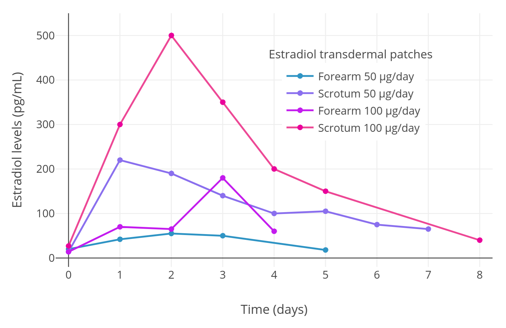

Genital Application via the Scrotum and Neolabia for Greatly Enhanced Absorption of Transdermal Estradiol in Transfeminine People
By Aly | First published March 29, 2019 | Last modified April 27, 2022
Abstract / TL;DR
Genital skin, such as scrotal, penile, and labial skin, appears to have enhanced capacity for absorption relative to other skin areas. Hormonal medications like estradiol and testosterone used transdermally are normally applied to skin sites like the arms, buttocks, and abdomen. These medications have been limitedly studied by genital application. A single 100 μg/day transdermal estradiol patch normally achieves estradiol levels of around 100 pg/mL on average. An Argentinian clinical study of scrotally applied transdermal estradiol patches in men with prostate cancer found that scrotal administration resulted in much higher estradiol levels than forearm application and that a single 100 μg/day transdermal estradiol patch applied to the scrotum produced mean estradiol levels of 500 pg/mL. This is in line with roughly 5-fold higher estradiol levels with scrotal application relative to conventional skin sites. Genital application of transdermal estradiol gel has not been evaluated, but studies of testosterone gel and cream applied scrotally have found 5- to 8-fold higher testosterone levels than with application to conventional skin sites. Based on the chemical similarity of estradiol to testosterone and the comparably much higher estradiol levels with scrotal estradiol patches, this is likely to generalize to estradiol gel. The enhanced absorption of estradiol afforded by genital administration may be useful in transfeminine hormone therapy. Genital application may be used for achieving better estradiol levels in those who have less satisfactory estradiol levels with the transdermal route and for achieving higher estradiol levels for purposes of testosterone suppression, for instance with high-dose estradiol monotherapy.
Introduction
Estradiol is available for use in a variety of forms and by different routes (Wiki). One of these routes is transdermal administration, which includes estradiol patches, estradiol gels, and estradiol emulsions and sprays (Wiki). Estradiol patches and gels are by far the most commonly used forms by this route however. Conventional skin sites by which transdermal estradiol is administered include the arms and the abdomen. Typically, estradiol patches achieve estradiol levels of around 50 to 100 pg/mL per 100 μg/day patch, while estradiol gel achieves estradiol levels of around 100 pg/mL per 3 mg/day estradiol (Aly, 2020; Wiki). However, there is substantial variability between people in estradiol levels achieved with both estradiol patches and gels (Wiki). Some individuals obtain estradiol levels higher or lower than others with the same form and dose of transdermal estradiol. In a subset of people, estradiol levels may be too low for optimal therapeutic efficacy and testosterone suppression may consequently be inadequate. It may also be difficult to obtain the high estradiol levels needed for high-dose estradiol monotherapy with transdermal estradiol in people who opt for this particular therapeutic approach.
In the 1960s, a clinical study of the transdermal absorption of hydrocortisone applied to different skin sites in humans was published (Feldmann & Maibach, 1967 [Materials]). Hydrocortisone is also known as cortisol and is notable in being a steroid hormone closely related structurally to sex hormones like estradiol and testosterone. In the study, a solution of radiolabeled hydrocortisone was applied to a variety of different skin sites in men and then subsequent urinary excretion of the radioactive material (hydrocortisone and its metabolites) was quantified (Feldmann & Maibach, 1967). The researchers found that the radioactivity excreted varied considerably by application site and was dramatically higher than with the forearm and other sites in the case of application to the scrotum (Feldmann & Maibach, 1967). Relative to the forearm (1.0), the recovery of radioactivity from greatest to least was scrotum (42.0), jaw angle (13.0), forehead (6.0), underarm (3.6), scalp (3.5), back (1.7), palm of hand (0.8), ankle (0.4), and sole of foot (0.1) (Feldmann & Maibach, 1967). This study was the first to indicate that transdermal absorption via genital skin such as scrotum can be markedly higher compared to other skin areas.
Findings that hydrocortisone and other medications are absorbed much better by scrotal application raised the question of whether estradiol and testosterone would similarly have greater bioavailability by genital administration. This was eventually confirmed in the case of testosterone and led to the development of scrotal testosterone patches (brand name Testoderm) in the 1980s and their marketing approval in the United States in 1993 (Place et al., 1990; Mazer et al., 1992; Atkinson, Chang, & Snyder, 1998). Conversely, scrotal application of transdermal estradiol, perhaps owing to the much more limited use of estrogens in men, was seemingly never investigated. Recently however, the present author came upon the following obscure study on scrotum application of transdermal estradiol patches as a form of high-dose estrogen therapy for men with prostate cancer:
- Premoli, F., Re, I., Asenjo, G., Maximino, G., & Micheletti, L. (2005). Tratamiento del Cáncer de Próstata Avanzado con Estrógenos Transdérmicos Escrotales (ETE). [Transdermal Scrotal Estrogen Patches (TSEP) in the Treatment of Advanced Prostate Cancer.] Revista Argentina de Urología, 70(4), 231–241. [Google Scholar] [URL] [PDF] [Translation]
This study would appear to be the first and currently only study to investigate scrotal application of transdermal estradiol. Previous searches had missed it due to the paper being in a non-English language. Before the findings of the study are discussed, some further background and reasoning for the concept of scrotal administration of transdermal estradiol will be provided. Interested readers who would prefer to just go straight to the results of the study can skip to the Study Findings section below.
Further Background
Estrogens are used at high doses in the treatment of prostate cancer in men as a means of androgen deprivation therapy due to their potent functional antiandrogenic effects. They produce these antiandrogenic effects by suppressing gonadal testosterone production via their antigonadotropic effects and additionally by increasing sex hormone-binding globulin (SHBG) production and levels and thereby decreasing the fraction of free and hence bioactive androgens. High-dose estrogen therapy has comparable effectiveness to gonadectomy and gonadotropin-releasing hormone (GnRH) agonists and antagonists for this use but have some advantages and disadvantages in comparison. Advantages of estrogens include reduced hot flashes, preservation of bone density, some retainment of sexual interest, better quality of life, and far lower cost. Disadvantages include feminization and gynecomastia (breast development in cisgender men, which is undesirable for men of course) and cardiovascular toxicity. Parenteral and bioidentical forms of estradiol, for instance injectable estradiol esters and transdermal estradiol, are preferred over oral and non-bioidentical estrogens like diethylstilbestrol, ethinylestradiol, and conjugated estrogens due to their far lower propensity for cardiovascular toxicity (Aly, 2020).
For prostate cancer, injections of estradiol esters are effective, but the long-acting estradiol esters like polyestradiol phosphate and estradiol undecylate that have traditionally been used to treat prostate cancer have been discontinued. Shorter-acting estradiol esters like estradiol valerate and estradiol cypionate can be used but need to be injected frequently (e.g., weekly) and have limited availability in many parts of the world. Injections are also inconvenient and can be anxiety-provoking and painful. Transdermal estradiol patches can be effective, but generally three or four large 100 μg/day patches are required for adequate testosterone suppression (Ockrim, Lalani, & Abel, 2006; Langley et al., 2008; Langley et al., 2021). Using this many patches at the same time can be uncomfortable and expensive. Transdermal estradiol gel has been used to treat prostate cancer as well, but very high doses of estradiol have been required by this route (≥6 mg/day), and even then, only limitedly high estradiol levels and incomplete suppression of testosterone levels have been achieved (Aly, 2019).
Transdermally administered medications are absorbed through the skin. The capacity for absorption of skin varies for different skin areas. It has been known for decades that scrotal skin has a far higher capacity for absorption of medications than do most other skin sites (Feldmann & Maibach, 1967 [Materials]; Wiki). It is notable in this regard that the first transdermal testosterone patches to be introduced for medical use were scrotal patches. This was due to the large amounts of hormone that needed to be delivered in men in the case of testosterone. Non-scrotal testosterone patches were only introduced later, and had to be larger in size in comparison to scrotal testosterone patches to deliver the same amount of hormone (Behre & Nieschlag, 2012; Khera, 2013). Based on the preceding, and with estradiol closely related to testosterone structurally, scrotal application of transdermal estradiol formulations may likewise have much greater absorption than with conventional skin sites.
Premoli et al. (2005), the study cited in the Introduction section of this article, assessed the use of a single transdermal estradiol patch worn on the scrotum to treat prostate cancer. These researchers are from Argentina, a country in which poverty is high. Many people have considerable difficulty affording medications in this part of the world. In addition to the advantages of estrogen therapy over conventional antiandrogen therapy, the economic aspect was the motivation for their research. Essentially, their goal was to achieve, via a parenteral and hence less toxic route, high levels of estradiol that could fully suppress testosterone levels and treat prostate cancer while remaining affordable and reasonably convenient. The therapeutic goals of many transfeminine people, aside from treating prostate cancer, are quite similar. Hence, this therapy could be of value for transfeminine hormone therapy as well.
Sublingual estradiol via sublingual administration of oral estradiol tablets serves the purpose of achieving higher estradiol levels and testosterone suppression relative to oral estradiol for many transfeminine people. But sublingual administration of estradiol has some drawbacks, for instance a short duration, large fluctuations in estradiol levels, and some exposure of the liver to excessive estradiol levels in turn likely resulting in greater health risks like blood clots and cardiovascular problems (Sam, 2021; Wiki). Hence, an alternative option with more steady and sustained estradiol levels would be favorable.
Study Findings
First, Premoli et al. (2005) conducted a crossover proof-of-concept pilot experiment with two men with prostate cancer to assess whether scrotal transdermal estradiol is absorbed better than non-scrotal transdermal estradiol. One of the men used a 50 μg/day transdermal estradiol patch on the forearm first and subsequently on the scrotum, while the other man used a 100 μg/day transdermal estradiol patch on the forearm initially and then on the scrotum. The researchers found that maximal estradiol levels were much higher with scrotal application compared to application to the forearm:
Table 1: Estradiol levels with estradiol patches applied to the forearm versus scrotum in a pilot study:
| Patient | Estradiol patch dose | Application site | Maximal estradiol level | Difference |
|---|---|---|---|---|
| Patient #1 | 50 μg/day | Forearm | 55 pg/mL | – |
| Scrotum | 200 pg/mL | 3.6-fold | ||
| Patient #2 | 100 μg/day | Forearm | 180 pg/mL | – |
| Scrotum | 500 pg/mL | 2.8-fold |
Here is a graph of the results of the initial pilot “mini study” with the full levels (n = 2, crossover design):
|  |
|---|
| Figure 1: Estradiol levels with transdermal estradiol patches applied to the scrotum in two men with prostate cancer in a crossover design (Premoli et al., 2005). Following this initial pilot experiment, estradiol levels were measured with continuous scrotally applied 100 μg/day transdermal estradiol patches in a larger sample of 35 men with prostate cancer and mean estradiol levels of around 500 pg/mL were observed (Premoli et al., 2005). |
After the pilot “mini study”, Premoli et al. (2005) conducted a full prostate cancer study with 35 patients, each patient wearing one 100 μg/day transdermal estradiol patch on the scrotum. Analogously to the pilot study, estradiol levels of around 500 pg/mL were produced on average in the full sample of men, with a range of estradiol levels across patients of about 125 to 1,200 pg/mL. This wide range is consistent with the high interindividual variability in estradiol levels achieved with estradiol by the transdermal route in general (Wiki). With application to conventional skin sites, a single 100 μg/day estradiol patch will only achieve estradiol levels of around 100 pg/mL on average (Wiki; Graphs). In addition, two to six estradiol patches were reported in one study to achieve mean estradiol levels of only about 200 to 400 pg/mL (Graph; Ockrim, Lalani, & Abel, 2006). Taken together, it seems that scrotal application of transdermal estradiol patches may result in at least about 5-fold or greater bioavailability compared to placement of the patches on non-scrotal skin. This marked increase in bioavailability is analogous to the increase in bioavailability afforded by taking oral estradiol tablets sublingually (about 2- to 5-fold increase) (Wiki).
{kind=link}
The mean levels of estradiol observed in the study (i.e., 500 pg/mL) are known to be sufficient for strong suppression of gonadal testosterone production and by extension circulating testosterone levels, with estradiol levels of ≥200 pg/mL known to suppress testosterone levels by ≥90% on average (Aly, 2018; Wiki). Unfortunately, Premoli and colleagues were not able to obtain data on testosterone suppression in most of the men in their study because at the start of the study almost all of the men already had low pre-treatment testosterone levels (mean 28 ng/dL, range 10–90 ng/dL). This was due to concomitant androgen deprivation therapy with conventional approaches like gonadectomy and GnRH modulators. In any case, the researchers reported that in two men who were not on conventional androgen deprivation therapy and who had male-range initial testosterone levels, treatment with intermittent scrotal transdermal estradiol patches resulted in testosterone levels that were 10 to 30 ng/dL during the “on” periods and 200 to 600 ng/dL during the “off” periods. This is consistent with strong suppression of testosterone levels by high estradiol levels as expected based on other clinical studies.
Implications for Transfeminine People
The findings of Premoli et al. (2005) are important as they provide valuable information supporting an additional option for enhancing the effectiveness of estradiol in transfeminine hormone therapy. Transfeminine people who have not undergone vaginoplasty can apply transdermal estradiol patches to the scrotum and those who have undergone vaginoplasty may be able to apply transdermal estradiol to the neolabia. Scrotal or neolabial application of transdermal estradiol may be useful for improving estradiol levels in those with low estradiol levels when applied to conventional skin sites, for allowing for lower doses and hence reduced costs, or for achieving higher estradiol levels for the purpose of testosterone suppression as in for instance high-dose estradiol monotherapy. Moreover, this approach for achieving higher estradiol levels may be advantageous relative to alternatives like sublingual and rectal estradiol in terms of considerations like stability of estradiol levels and potentially convenience.
Aside from transdermal estradiol patches, other transdermal forms of estradiol like transdermal estradiol gel may also achieve much higher estradiol levels by genital application similarly. It is also notable that it may not be necessary to apply estradiol gel to a large area of skin as a study of transdermal estradiol gel found that the smaller the area of application, the greater the estradiol levels achieved (Järvinen et al., 1997; Graph). Higher estradiol levels with estradiol gel by the scrotal or neolabial route still remains to be tested and confirmed however. In any case, if it does work, it has a major advantage relative to patches of only needing to be applied once a day instead of having to be worn constantly. It is notable that 100 μg/day estradiol patches can be quite large (Table). Scrotal testosterone patches were discontinued because they were too large and irritating, which is easy to imagine in practice. However, lower-dose estradiol patches like 50 or 75 μg/day are smaller in size (Table) and may be more practical and tolerable than higher-dose patches for scrotal use while still potentially achieving high levels of estradiol.
{kind=link}
Another interesting thought relates to potential therapeutic use of transdermal progesterone. Very low but nonetheless significant circulating levels of progesterone (~0.75 ng/mL) have been observed with transdermal progesterone creams (Wiki). Because of the low progesterone levels achieved with transdermal progesterone and its lack of clear clinical effectiveness, no transdermal forms of progesterone are approved for medical use at this time. Transdermal progesterone could potentially be made more effective by scrotal application similarly to estradiol and testosterone. Whether this would translate into transdermal progesterone having actual therapeutic usefulness is unknown and possibly unlikely however—the circulating levels of progesterone that occur with transdermal progesterone may just be too low even with scrotal administration. Another issue is the genital skin has high expression of 5α-reductase, a major metabolizing enzyme for progesterone. In any case, it would nonetheless be very interesting for scrotal application of transdermal progesterone formulations to be evaluated.
In summary, Premoli et al. (2005) has shown that scrotal application of transdermal estradiol achieves much higher estradiol levels than non-scrotal application. This was already known to be the case for testosterone, but prior to this study there were no published data on this issue for estradiol.
Additional Topics on Genital Application of Estradiol
Patch Sizes and Selection
There are widely different sizes of transdermal estradiol patches in terms of brands (e.g., Climara, Vivelle, Vivelle-Dot, etc.), doses (i.e., 14 to 100 μg/day), and durations (i.e., designed for once weekly or twice weekly use) (Table). Estradiol patches range in size from smaller than a United States dime (1.65 cm2) to almost as large as a typical coffee cup base (44 cm2). This is a more than 25-fold range in size! In the case of 50 μg/day estradiol patches, sizes range from 3.3 to 22 cm2, and in the case of 100 μg/day patches, sizes range from 6.6 to 44 cm2. Wearing very large transdermal estradiol patches on the scrotum is obviously not going to be easy nor comfortable. The preceding linked table may be useful for helping to determine what the best patch brand and dose for a given person and their personal circumstances would be. Patches may also be cut and this may also be helpful.
Cutting and Adhesing Patches
Some but not all transdermal estradiol patches can be cut into smaller portions. As some estradiol patches are quite large, the possibility of cutting them could be useful in the context of genital application. See the following literature excerpts for some information (Matthews et al., 2017; Klein et al., 2018; Norjavaara, Ankarberg-Lindgren, & Kriström, 2016; Rosenfield, Kiess, & Keizer-Schramad, 2006):
Matrix patches are self-adhesive and release approximately 25 µg 17β-oestradiol/24 hours. Since the oestradiol is evenly distributed throughout the patch, the patches can be cut to provide the required dose. Practically, patches are cut into half or quarter as more complex divisions would be prone to inaccuracies and impracticable. Unused patch fractions may be stored in their packaging in the fridge for up to 1 week. The patch (or patch fraction) should be applied to clean dry skin over the buttocks or hips using Opsite® (a transparent adhesive film) if necessary to ensure good adhesion. […] Transdermal patches may be more difficult to use particularly when cutting patches to small sizes as they may fall off and require tape support.
Currently, the lowest-dose patch commercially available delivers 14 μg/d E2, and the most widely used low-dose patches deliver 25 μg/d. One method to deliver lower doses is to cut the patch in smaller pieces. Patches with a matrix design can be easily cut, whereas patches with a reservoir technology should not be cut. The disadvantages of cutting patches are that handling the smaller pieces may be difficult and cutting the patches is not recommended by the products’ labels. However, there is clinical experience with this, especially in Scandinavia. There, a group showed that a fractionated patch dose (one-quarter patch of a 25-μg dose approximately equals 6.2 μg or even less) applied overnight mimicked the normal, early-morning serum E2 peak and fell back to baseline within a few hours of patch removal (17).
For transdermal administration, gel and patches are available; dosing by cutting patches is more reliable when titrating the E2 serum level, and the delivery can be stopped in the morning by just taking the patch away when mimicking the circadian rhythm seen in early spontaneous puberty (Fig. 1). […] Our present recommendation is to use E2 matrix patches when available. Matrix patches are stable and have a homogenous E2 layer over the total surface and can therefore be cut into individualized doses. However, matrix patches are available with different patch areas for the same dose from different brands. The larger the patch area, the easier to cut the patch into smaller pieces for the target dose.
This is to be compared to the reservoir patches which have a separate drug layer with a liquid compartment containing a drug solution or suspension separated by the adhesive layer. By cutting such a patch, the liquid compartment will be destroyed and the drug will leak out.
It is unknown how to best deliver estradiol doses below 14 μg daily. While a European matrix patch can apparently be cut into quarters so the estrogen can be delivered overnight, the US manufacturers recommend against this and our limited experience has yielded erratic plasma estradiol levels, which suggests that these patches may not be uniformly impregnated with estradiol.
Almost all estradiol patches available today are matrix patches. Estraderm, a reservoir patch, is one of the only exceptions. It is discontinued in the United States but may still be used in the United Kingdom.
Tegaderm, a transparent film dressing, is another option for helping to hold patches in place (Reddit).
Penile Skin Application
Penile skin seems to have similar absorptive characteristics to scrotal skin and hence may also allow for improved absorption with transdermal application. As such, it could be useful as a supplement or alternative to scrotal application of transdermal estradiol. See the following literature excerpt for some more information on penile application (Hairston, Becher, & McVary, 2006):
[…] topical penile therapy has a unique set of anatomic and physiological issues that must be considered. There are several anatomic/fascial layers between the penile skin and the corpora cavernosa. The tunica albuginea is presumed to be difficult to penetrate because of its thick layers of collagen. Therefore, topical treatment trials have emphasized exposure to the glans penis because it has direct venous communication to the corpora cavernosa (40,41). The skin itself is a relatively impermeable tissue because of the stratum corneum. The horny cells at the stratum corneum are bonded with a very tight intercellular lipid matrix bilayer that makes the passage of drugs challenging (42). To overcome this barrier, investigators have used penetration enhancers that permeate this layer and reach the subdermis. Fortunately, the penis and scrotum are unique in that their stratum corneum is the most permeable of all anatomic locations tested. Depending on the molecular structure of the agent tested, there can be nearly 100% absorption of topical agents applied to these areas. Exposure to the glans affords a more easily “breached” layer. Other skin regions (e.g., back and palms) are particularly impermeable (43). An additional factor confounding efficient delivery of drug is the rich vasculature of the deep dermis that may “steal” the drugs to the systemic circulation.
Hence, if more skin area is desired for application of estradiol gel or patches, use of penile skin could possibly work as well. This may notably also be relevant to vaginal administration for most post-vaginoplasty transfeminine people (i.e., via penile inversion) as the neovaginal lining is penile skin. However, no studies exist on the absorptive effectiveness of neovaginal administration.
Genital Application of Estradiol Gel and Cream
Two clinical studies on scrotal application of transdermal testosterone gel and cream in men have been published:
- Iyer, R., Mok, S. F., Savkovic, S., Turner, L., Fraser, G., Desai, R., Jayadev, V., Conway, A. J., & Handelsman, D. J. (2017). Pharmacokinetics of testosterone cream applied to scrotal skin. Andrology, 5(4), 725–731. [DOI:10.1111/andr.12357]
- Kuhnert, B., Byrne, M., Simoni, M., Kopcke, W., Gerss, J., Lemmnitz, G., & Nieschlag, E. (2005). Testosterone substitution with a new transdermal, hydroalcoholic gel applied to scrotal or non-scrotal skin: a multicentre trial. European Journal of Endocrinology, 153(2), 317–326. [DOI:10.1530/eje.1.01964]
Here are some relevant excerpts from the first paper (which also briefly describe the findings of the second paper):
Scrotal skin is thin and has high steroid permeability, but the pharmacokinetics of testosterone via the scrotal skin route has not been studied in detail. The aim of this study was to define the pharmacokinetics of testosterone [cream] delivered via the scrotal skin route. The study was a single‐center, three‐phase cross‐over pharmacokinetic study of three single doses (12.5, 25, 50 mg) of testosterone cream administered in random sequence on different days with at least 2 days between doses to healthy eugonadal volunteers with endogenous testosterone suppressed by administration of nandrolone decanoate.
The bioavailability of testosterone via the scrotal skin is striking[ly] higher than for abdominal skin. Using the same testosterone cream and steroid LC-MS assay measurements, in this study a Cmax (4.6 ng/mL, 16.0 nM) was achieved with the lowest dose (12.5 mg) applied to the scrotal skin whereas applying 100 mg testosterone cream to the abdominal skin produced a Cmax of 16.3 nmol/L (4.7 ng/mL). This suggests an about eightfold increase in testosterone bioavailability, using the scrotal compared with abdominal skin routes.
One previous study has reported that the pharmacokinetics of scrotal application of testosterone gel was similar to that of a scrotal testosterone patch or a fivefold larger dose of non-scrotal testosterone gel, consistent with at least a fivefold higher transdermal bioavailability of testosterone (Kuhnert et al., 2005). Other studies assessing pharmacokinetics of testosterone application to non-scrotal skin have yielded variable time of peak concentration (Tmax) ranging from 6–16 h (Marbury et al., 2003; Miller et al., 2011; Olsson et al., 2014) but similar peak concentration (Cmax) as scrotal skin application (Rolf et al., 2002; Bouloux, 2005; Olsson et al., 2014).
We conclude that the scrotal administration of testosterone in a cream formulation provides high bioavailability, dose-dependent peak serum testosterone concentration, and tolerability with a much lower dose relative to the non-scrotal transdermal route.
Based on the findings of these studies, maximal testosterone levels with testosterone gel or cream are about 5- to 8-fold higher with with scrotal application than with application to conventional skin sites (e.g., abdomen). This is analogous to the 5-fold higher testosterone levels that have been achieved with scrotal testosterone patches compared to non-scrotal testosterone patches.
Estradiol is very similar to testosterone in chemical structure and chemical properties (e.g., lipophilicity and likely absorption characteristics). Hence, although there is currently no research assessing scrotal/neolabial application of transdermal estradiol gel or cream, or showing definitively that it achieves greater estradiol levels than conventional transdermal application, we can infer that because this has been demonstrated for testosterone, it is likely to be the case with estradiol as well. This is particularly true considering that far higher estradiol levels have already been shown with scrotal application of transdermal estradiol patches compared to non-scrotal application of such patches.
Consequently, scrotal/neolabial administration of transdermal estradiol gel or cream is likely to be a powerful alternative option for achieving high estradiol levels similarly to scrotal/neolabial application of transdermal estradiol patches. Scrotal/neolabial application of transdermal estradiol preparations may allow for greater efficacy and considerably reduced cost compared to conventional transdermal application of such formulations. In addition, whereas patches must be worn constantly and scrotal/neolabial application of such patches may be uncomfortable and inconvenient compared to conventional transdermal application, gels and creams are applied once per day and dry rapidly. Scrotal/neolabial application of patches also requires hair removal and can leave difficult-to-remove adhesive residues as well as cause adhesion-related local skin reactions. In contrast, this is not the case with gels or creams either. As such, estradiol preparations like gel or cream may be the preferred type of transdermal formulation for scrotal/neolabial use.
One possible caveat to scrotal/neolabial application is that transdermal estradiol gels are hydroalcoholic gels and consequently have the potential to irritate the skin and burn or sting when applied to the genital region. A potential solution to this is the use of transdermal estradiol preparations containing less or no alcohol, such as creams (e.g., compounded and over-the-counter products) and emulsions (e.g., Estrasorb), instead of hydroalcoholic gels. There is also a transdermal estradiol aerosol spray product (brand name Evamist) that may be another alternative option.
Taken together, transdermal testosterone gel or cream applied to scrotal skin is absorbed much better and results in approximately 5- to 8-fold higher testosterone levels than when applied to conventional skin sites. The same is likely also true for estradiol due to the close structural similarity of estradiol to testosterone and due to estradiol patches having been shown to be absorbed substantially better when applied to scrotal skin than to conventional skin sites.
Safety of Genital Application of Estradiol
Some have expressed concern as to the safety of genital application of estradiol. For instance, it has been asked whether estradiol applied to the scrotum might increase risk of testicular cancer or prostate cancer due to the high local estradiol concentrations that might result. Large observational studies of transfeminine people on standard hormone therapy have found no increase in risk of testicular cancer (Bensley et al., 2021; de Nie et al., 2021) or prostate cancer (de Nie et al., 2020). In fact, risk of prostate cancer in transfeminine people appears to be substantially decreased with standard hormone therapy (de Nie et al., 2020). Additionally, androgen deprivation reduces prostate cancer risk and progression in cisgender men, and high-dose estrogen therapy is effective for the treatment of this cancer, with a longstanding history of use (Ockrim, Lalani, & Abel, 2006; Norman et al., 2008; Langley et al., 2021). Hence, while we do not have the data needed to answer the question of whether very high local concentrations of estradiol in the testes or prostate might increase cancer risk in these tissues, the available circumstantial clinical evidence is not suggestive of such and this is reassuring.
References
- Aly. (2018). An Introduction to Hormone Therapy for Transfeminine People. Transfeminine Science. [URL]
- Aly. (2019). A Review of Studies on Estradiol Levels and Testosterone Suppression with High-Dose Transdermal Estradiol Gel and Ointment in Cisgender Men with Prostate Cancer. Transfeminine Science. [URL]
- Aly. (2020). Approximate Comparable Dosages of Estradiol by Different Routes. Transfeminine Science. [URL]
- Aly. (2020). Estrogens and Their Influences on Coagulation and Risk of Blood Clots. Transfeminine Science. [URL]
- Atkinson, L. E., Chang, Y. L., & Snyder, P. J. (1998). Long-term experience with testosterone replacement through scrotal skin. In Nieschlag, E., & Behre, H. M. (Eds.). Testosterone: Action · Deficiency · Substitution, 2nd Edition (pp. 365–388). Berlin/Heidelberg: Springer. [DOI:10.1007/978-3-642-72185-4_13]
- Behre, H. M., & Nieschlag, E. (2012). Testosterone preparations for clinical use in males. In Nieschlag, E., Behre, H. M., & Nieschlag, S. (Eds.). Testosterone: Action · Deficiency · Substitution, 4th Edition (pp. 309–335). Cambridge/New York: Cambridge University Press. [DOI:10.1017/CBO9781139003353.016]
- Bensley, J. G., Cheung, A. S., Grossmann, M., & Papa, N. (2022). Testicular Cancer in Trans People Using Feminising Hormone Therapy–A Brief Review. Urology, 160, 1–4. [DOI:10.1016/j.urology.2021.11.014]
- de Nie, I., de Blok, C., van der Sluis, T. M., Barbé, E., Pigot, G., Wiepjes, C. M., Nota, N. M., van Mello, N. M., Valkenburg, N. E., Huirne, J., Gooren, L., van Moorselaar, R., Dreijerink, K., & den Heijer, M. (2020). Prostate Cancer Incidence under Androgen Deprivation: Nationwide Cohort Study in Trans Women Receiving Hormone Treatment. The Journal of Clinical Endocrinology and Metabolism, 105(9), e3293–e3299. [DOI:10.1210/clinem/dgaa412]
- de Nie, I., Wiepjes, C. M., Blok, C. J., Moorselaar, R. J., Pigot, G. L., van der Sluis, T. M., Barbé, E., van der Voorn, P., van Mello, N. M., Huirne, J., & den Heijer, M. (2021). Incidence of testicular cancer in trans women using gender‐affirming hormonal treatment: a nationwide cohort study. BJU International, 129(4), 491–497. [DOI:10.1111/bju.15575]
- Feldmann, R. J., & Maibach, H. I. (1967). Regional variation in percutaneous penetration of 14C cortisol in man. The Journal of Investigative Dermatology, 48(2), 181–183. [DOI:10.1038/jid.1967.29]
- Hairston, J. C., Becher, E., & McVary, K. T. (2006). Topical and Intra-Urethral Therapy. In Mulcahy, J. J. (Ed.). Male Sexual Function: A Guide to Clinical Management, 2nd Edition (Current Clinical Urology) (pp. 303–321). Totowa: Humana Press. [DOI:10.1007/978-1-59745-155-0_14] [Google Books]
- Iyer, R., Mok, S. F., Savkovic, S., Turner, L., Fraser, G., Desai, R., Jayadev, V., Conway, A. J., & Handelsman, D. J. (2017). Pharmacokinetics of testosterone cream applied to scrotal skin. Andrology, 5(4), 725–731. [DOI:10.1111/andr.12357]
- Järvinen, A., Granander, M., Nykänen, S., Laine, T., Geurts, P., & Viitanen, A. (1997). Steady-state pharmacokinetics of oestradiol gel in post-menopausal women: effects of application area and washing. British Journal of Obstetrics and Gynaecology, 104(Suppl 16), 14–18. [DOI:10.1111/j.1471-0528.1997.tb11562.x]
- Khera, M. (2013). Treatment Options for Testosterone Replacement Therapy. In Hellstrom, W. J. G. (Ed.). Androgen Deficiency and Testosterone Replacement: Current Controversies and Strategies (pp. 129–139). Totowa: Humana Press. [DOI:10.1007/978-1-62703-179-0_10]
- Klein, K. O., Rosenfield, R. L., Santen, R. J., Gawlik, A. M., Backeljauw, P. F., Gravholt, C. H., Sas, T., & Mauras, N. (2018). Estrogen replacement in Turner syndrome: literature review and practical considerations. The Journal of Clinical Endocrinology & Metabolism, 103(5), 1790–1803. [DOI:10.1210/jc.2017-02183]
- Kuhnert, B., Byrne, M., Simoni, M., Kopcke, W., Gerss, J., Lemmnitz, G., & Nieschlag, E. (2005). Testosterone substitution with a new transdermal, hydroalcoholic gel applied to scrotal or non-scrotal skin: a multicentre trial. European Journal of Endocrinology, 153(2), 317–326. [DOI:10.1530/eje.1.01964]
- Langley, R. E., Godsland, I. F., Kynaston, H., Clarke, N. W., Rosen, S. D., Morgan, R. C., Pollock, P., Kockelbergh, R., Lalani, e., Dearnaley, D., Parmar, M., & Abel, P. D. (2008). Early hormonal data from a multicentre phase II trial using transdermal oestrogen patches as first‐line hormonal therapy in patients with locally advanced or metastatic prostate cancer. BJU International, 102(4), 442–445. [DOI:10.1111/j.1464-410X.2008.07583.x]
- Langley, R. E., Gilbert, D. C., Duong, T., Clarke, N. W., Nankivell, M., Rosen, S. D., Mangar, S., Macnair, A., Sundaram, S. K., Laniado, M. E., Dixit, S., Madaan, S., Manetta, C., Pope, A., Scrase, C. D., Mckay, S., Muazzam, I. A., Collins, G. N., Worlding, J., Williams, S. T., … & Parmar, M. (2021). Transdermal oestradiol for androgen suppression in prostate cancer: long-term cardiovascular outcomes from the randomised Prostate Adenocarcinoma Transcutaneous Hormone (PATCH) trial programme. The Lancet, 397(10274), 581–591. [DOI:10.1016/S0140-6736(21)00100-8]
- Matthews, D., Bath, L., Högler, W., Mason, A., Smyth, A., & Skae, M. (2017). Hormone supplementation for pubertal induction in girls. Archives of Disease in Childhood, 102(10), 975–980. [DOI:10.1136/archdischild-2016-311372]
- Mazer, N. A., Heiber, W. E., Moellmer, J. F., Meikle, A. W., Stringham, J. D., Sanders, S. W., Tolman, K. G., & Odell, W. D. (1992). Enhanced transdermal delivery of testosterone: a new physiological approach for androgen replacement in hypogonadal men. Journal of Controlled Release, 19(1–3), 347–361. [DOI:10.1016/0168-3659(92)90089-A]
- Norjavaara, E., Ankarberg-Lindgren, C., & Kriström, B. (2016). Sex steroid replacement therapy in female hypogonadism from childhood to young adulthood. In Bourguignon J.-P., Parent A.-S. (Eds.). Puberty from Bench to Clinic. Lessons for Clinical Management of Pubertal Disorders (Endocrine Development, Volume 29) (pp. 198–213). Basel: Karger. [DOI:10.1159/000438892]
- Norman, G., Dean, M. E., Langley, R. E., Hodges, Z. C., Ritchie, G., Parmar, M. K., Sydes, M. R., Abel, P., & Eastwood, A. J. (2008). Parenteral oestrogen in the treatment of prostate cancer: a systematic review. British Journal of Cancer, 98(4), 697–707. [DOI:10.1038/sj.bjc.6604230]
- Ockrim, J., Lalani, E. N., & Abel, P. (2006). Therapy insight: parenteral estrogen treatment for prostate cancer—a new dawn for an old therapy. Nature clinical practice Oncology, 3(10), 552–563. [DOI:10.1038/ncponc0602]
- Place, V. A., Atkinson, L., Prather, D. A., Trunnell, N., & Yates, F. E. (1990). Transdermal testosterone replacement through genital skin. In Nieschlag, E., & Behre, H. M. (Eds.). Testosterone: Action · Deficiency · Substitution, 1st Edition (pp. 165–181). Berlin/Heidelberg: Springer. [DOI:10.1007/978-3-662-00814-0_9]
- Premoli, F., Re, I., Asenjo, G., Maximino, G., & Micheletti, L. (2005). Tratamiento del Cáncer de Próstata Avanzado con Estrógenos Transdérmicos Escrotales (ETE). [Transdermal Scrotal Estrogen Patches (TSEP) in the Treatment of Advanced Prostate Cancer.] Revista Argentina de Urología, 70(4), 231–241. [Google Scholar] [URL] [PDF] [Translation]
- Rosenfield, R. L., Kiess, W., & de Muinck Keizer-Schrama, S. (2006). Physiologic induction of puberty in Turner syndrome with very low-dose estradiol. International Congress Series, 1298, 71–79. [DOI:10.1016/j.ics.2006.07.003]
- Sam. (2021). An Exploration of Sublingual Estradiol as an Alternative to Oral Estradiol in Transfeminine People. Transfeminine Science. [URL]